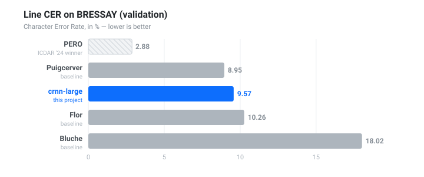
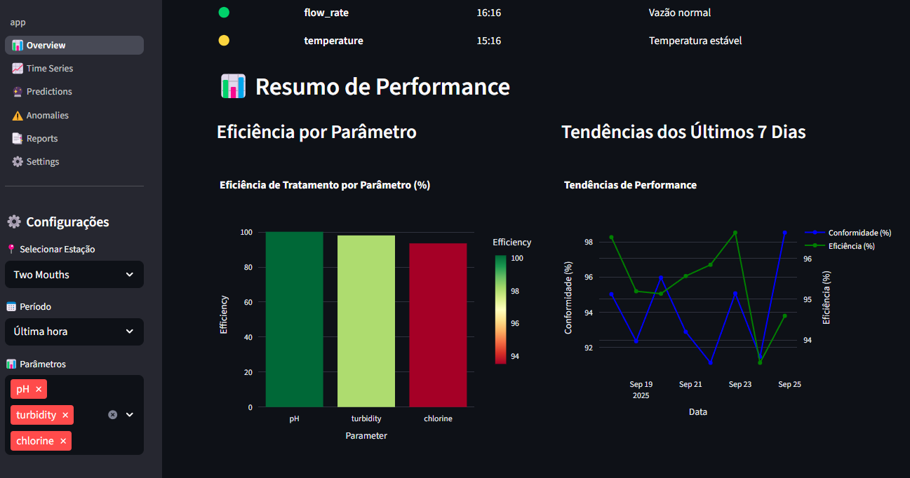
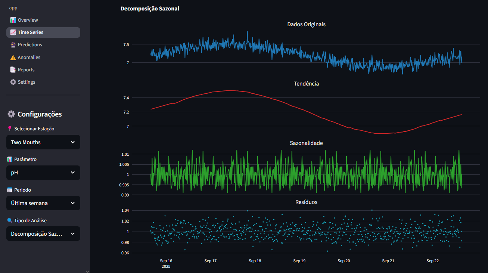
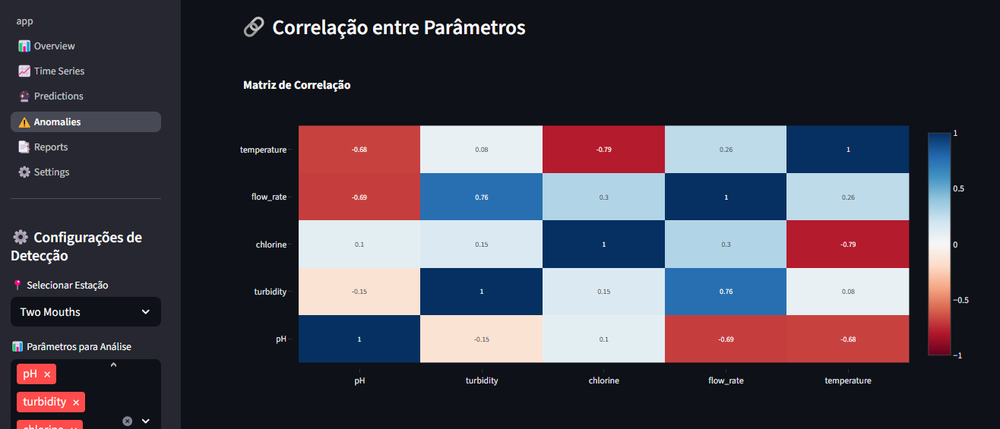
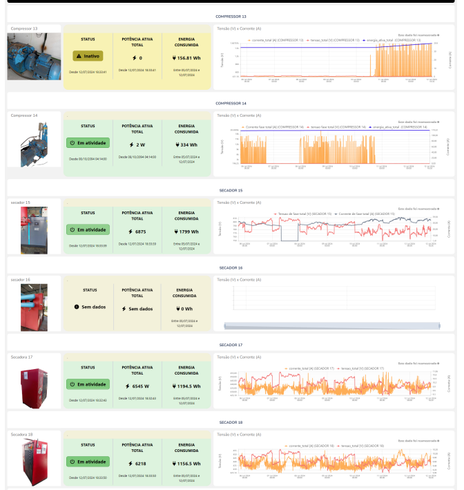
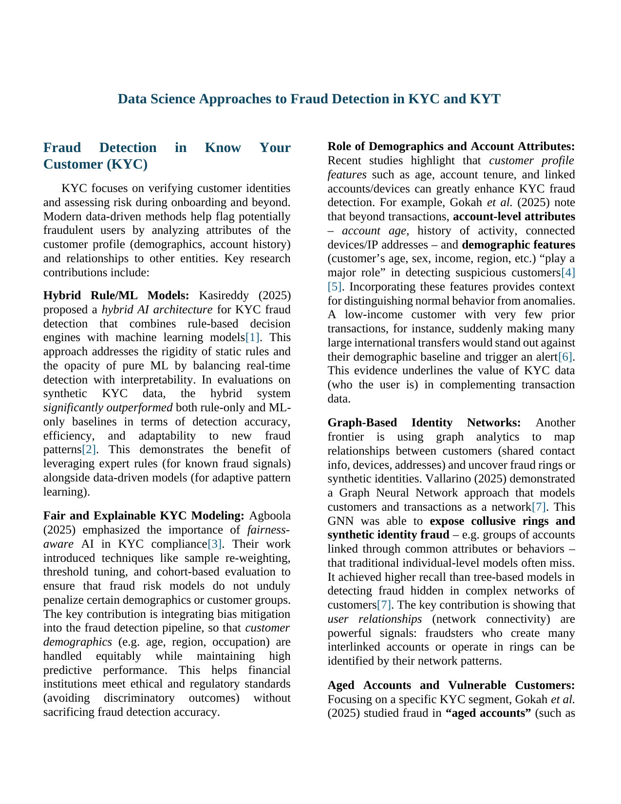
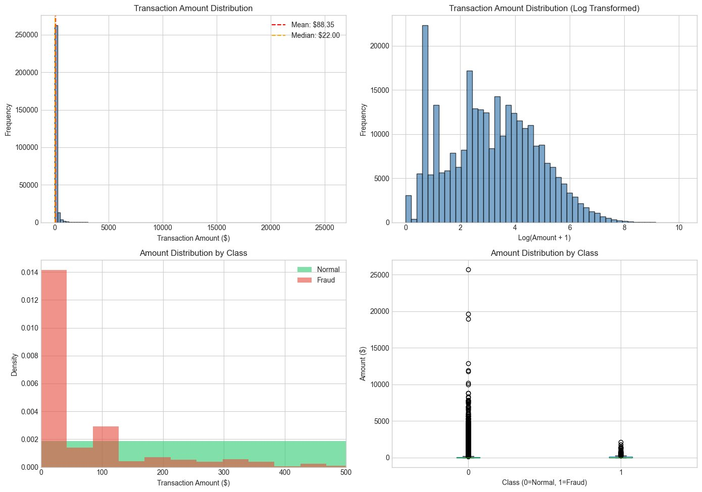
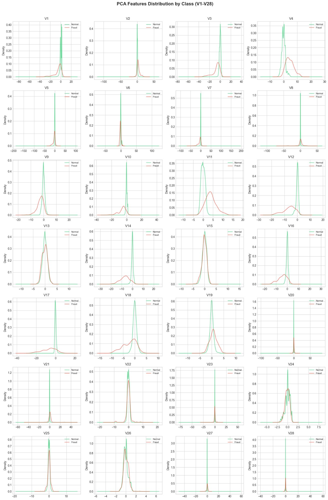
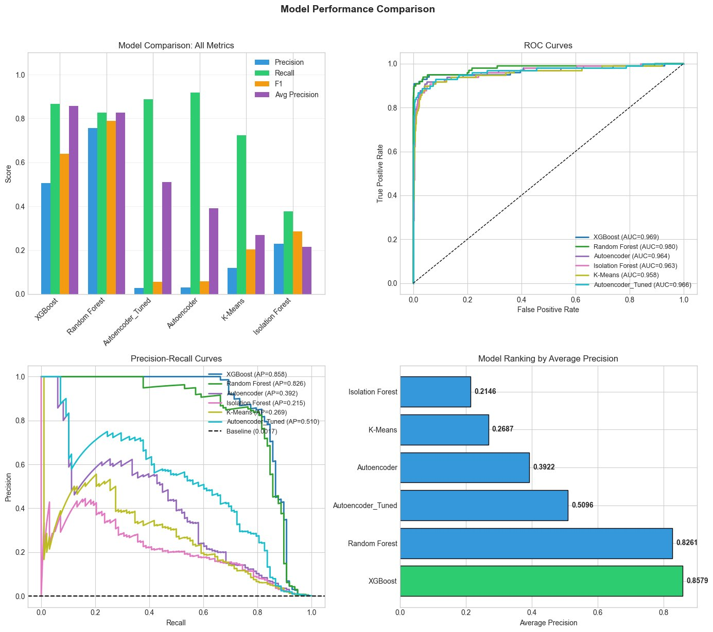

Sobre Mim
Comecei a trabalhar com dados durante a graduação em Física na UERJ, onde participei de um projeto de pesquisa em acústica apoiado pela FAPERJ. O trabalho envolvia medir níveis sonoros e estudar como as propriedades dos materiais afetam a reflexão acústica. Lidar com medidas logarítmicas como o decibel me ensinou cedo uma lição que continua influenciando a forma como abordo dados: entender o que uma medida representa é tão importante quanto o cálculo em si.
Depois de formado, atuei como professor de Física. Essa experiência me ajudou a desenvolver uma habilidade que se tornaria importante em ciência de dados: comunicar conceitos técnicos com clareza para pessoas de formações e níveis de conhecimento técnico diferentes.
Segui a formação acadêmica no CBPF, concluindo o mestrado como bolsista CAPES e o doutorado com bolsa FAPERJ Nota 10. Durante o doutorado, passei também um período na University of Warwick, no Reino Unido, como pesquisador visitante. Concluí o doutorado em 2023, recebendo menção honrosa pela tese. Minha formação em pesquisa me deu uma base sólida em análise experimental, estatística, interpretação de sinais e na distinção entre efeitos significativos e ruído.
Depois migrei para a indústria, aplicando essas habilidades a problemas práticos. Na BINAHKI, trabalhei em soluções de machine learning para clientes industriais, incluindo modelos implantados na AWS a partir de dados de sensores elétricos de equipamentos como fornos e compressoras. Em um dos projetos, a análise também ajudou a identificar um problema metodológico em um processo existente que contribuía para consumo desnecessário de energia.
Na ESPM, onde trabalho atualmente, venho ajudando a estruturar as capacidades de dados e analytics dentro de uma área que antes dependia fortemente de planilhas e processos manuais. Meu trabalho inclui pipelines de dados, machine learning, business intelligence e o desenvolvimento de soluções internas de IA generativa. Também trabalho em frameworks de avaliação para medir qualidade, custo e viabilidade operacional dos modelos antes da implantação.
Com o que eu trabalho
- Machine learning em produção: forecasting, detecção de anomalias, classificação, implantação e monitoramento
- Séries temporais e análise de sinais: reconhecimento de padrões, dados ruidosos, sinais fracos e monitoramento de condição
- IA generativa e sistemas com LLMs: RAG, workflows agentic, pipelines de avaliação e medição de qualidade
- Produtos de dados e apoio à decisão: frameworks de KPI, dashboards, pipelines de dados e tradução de resultados analíticos em decisões práticas
Tenho interesse particular por problemas em que dados, raciocínio estatístico e engenharia precisam funcionar juntos. Gosto de construir soluções que sejam tecnicamente sólidas, compreensíveis para os stakeholders e úteis na tomada de decisão do mundo real.
Perfil Acadêmico
Pesquisa em Física da Matéria Condensada e Ciência dos Materiais
Foco de Pesquisa
During my doctoral program, I focused my studies on the physical properties of transition metal oxides, with a special emphasis on the investigation of double perovskite-type structures and their impact on the "exchange bias" phenomenon.
My research covers a variety of techniques:
- Magnetic measurements
- Electrical and thermal transport studies
- X-ray diffraction
- Magnetoresistance analysis
- Investigation of strong electronic correlation phenomena
Experiência em Síntese de Materiais
Extensive experience in materials synthesis through various methods:
- Sol-gel synthesis
- Co-precipitation methods
- Solid-state synthesis
- Floating zone techniques
All syntheses included both polycrystals and single crystals of ternary and quaternary rare earth oxides, as well as binary single crystals such as V₂O₅.
Técnicas de Caracterização
- X-ray photoelectron spectroscopy (XPS)
- Raman spectroscopy
- Atomic force microscopy (AFM)
Pesquisa Inicial
- Musical Acoustics and Environmental Acoustics
- Applications of electromagnetic waves in magnetic resonance
- Analysis of sound waves in music
Ver todas as publicações →
Data Science
Resumo Profissional
Minha trajetória foi moldada pelo desenvolvimento e aplicação de modelos estatísticos, com forte foco na identificação de padrões, compreensão de tendências e geração de insights acionáveis.
Desenvolvi uma base sólida em resolução de problemas científicos, modelagem quantitativa e raciocínio analítico rigoroso através de projetos de pesquisa completos. Esta experiência inclui formulação de hipóteses, planejamento experimental, aquisição de dados e interpretação de fenômenos multivariados complexos. Com essa base, apresento abaixo uma visão detalhada da minha trajetória profissional sob uma perspectiva técnica.
Habilidades Técnicas
Programação & Manipulação de Dados
- Python (Pandas, Polars, NumPy)
- SQL para consultas, transformação e gerenciamento de dados
- PySpark e Databricks para processamento distribuído em larga escala
Visualização de Dados & Análise Estatística
- Matplotlib, Seaborn, Plotly
- SciPy e Statsmodels para modelagem estatística e inferência
Machine Learning & IA
- TensorFlow, Keras, Scikit-learn, XGBoost
- Prophet e Darts para previsão e modelagem de séries temporais
Cloud & Ops
- Docker para containerização e portabilidade
- AWS, Azure e Google Cloud para arquiteturas cloud escaláveis
- MLflow para rastreio de experimentos e registro de modelos
- GitHub para controle de versão e colaboração
- Hugging Face para deploy e compartilhamento de modelos
Visão Computacional & Processamento de Mídia
- OpenCV para processamento de imagem e vídeo
- MoviePy e FFmpeg para automação de vídeo
- Pillow para manipulação de imagens
IA Generativa
- LLMs (Claude, ChatGPT, Gemini) - Proficiência avançada
Experiência Profissional
ESPM (Escola Superior de Propaganda e Marketing)
Cientista de Dados | Ago 2024 - Presente
Na ESPM, trabalho na reestruturação do ciclo de vida dos dados em fluxos de extração, carregamento e transformação, além de projetar e manter um conjunto de indicadores de qualidade acadêmica que apoiam a tomada de decisão estratégica e a avaliação pedagógica.
Uma parte importante do meu papel envolve desenvolver e estruturar KPIs relacionados à atração, retenção, progressão e desempenho acadêmico dos alunos ao longo do tempo. Esses indicadores nos permitem monitorar resultados acadêmicos em diferentes canais de admissão e entender como o desempenho dos alunos evolui ao longo do programa.
Paralelamente, ajudo a desenvolver produtos analíticos que apoiam a segmentação e classificação de alunos recém-admitidos, permitindo a identificação precoce daqueles que podem necessitar de reforço acadêmico com base em métricas e indicadores de desempenho previamente definidos.
Além da implementação técnica, contribuo ativamente para o design conceitual das métricas e frameworks usados para mapear todo o ecossistema acadêmico. Isso inclui traduzir objetivos educacionais em indicadores mensuráveis, validar suposições com dados e comunicar resultados aos stakeholders.
Também trabalho em soluções complementares como dashboards que integram outputs de machine learning com metadados acadêmicos, além de ferramentas de automação para operações acadêmicas. Um exemplo é o desenvolvimento de uma plataforma interna de geração de provas, que melhora a eficiência, reduz custos operacionais e fortalece a base de dados necessária para suportar os KPIs construídos para monitoramento institucional.
- Analytics Preditivo: Dashboards de KPIs para taxas de aprovação, retenção e conclusão acadêmica
- Pesquisa Aplicada: Abordagens de ML/IA aplicadas a datasets acadêmicos interdisciplinares
- Produtos de Dados: Soluções analíticas apoiando gestão acadêmica e estratégias de aprendizagem
- Otimização de Processos: Análise de alocação de recursos e melhorias de eficiência operacional
Tech: Python, SQL, Azure, Azure Functions, Azure ML, Power BI, Docker, Kubernetes, FastAPI, RAG, Qdrant
BINAHKI
Cientista de Dados Sênior | Set 2023 - Ago 2024
Na BINAHKI, trabalhei em produtos de monitoramento inteligente para clientes multinacionais como a ZF Friedrichshafen, usando dados de sensores IoT para monitorar máquinas industriais e otimizar processos de produção.
O projeto principal envolveu o monitoramento de fornos industriais usados na produção de aço através de sinais de tensão elétrica. Os dados dos sensores eram armazenados em um ambiente SQL baseado em nuvem integrado com AWS S3, e o pipeline incluía ingestão de dados, processamento e detecção de ciclos operacionais baseada em modelos.
Usando Python e TensorFlow, treinei modelos de séries temporais para aprender padrões de comportamento normal e identificar eventos-chave como o início e fim de cada lote de produção. Com base nessa detecção em nível de ciclo, construí parâmetros estatísticos de consumo de energia que permitiram a previsão de uso mensal e medição da eficiência de produção.
Além do monitoramento de fornos, soluções IoT similares foram implantadas em outras máquinas industriais com o mesmo objetivo: detecção de anomalias para manutenção preditiva. Esses modelos apoiaram a identificação precoce de comportamento anormal em equipamentos envolvendo bombas, sistemas de torque e carga mecânica.
Além do desenvolvimento de produtos, também contribuí para o design e arquitetura de soluções de ciência de dados para chamadas públicas de inovação. Essas iniciativas resultaram em propostas bem-sucedidas, incluindo um projeto para uma empresa de saneamento focado na correção de registros faltantes e anômalos usando métodos de séries temporais multivariadas e modelos estatísticos como ARIMAX.
Tech: Python, SQL, PySpark, Databricks, MLflow, AWS (S3, SageMaker, EC2, Lambda), Google Cloud, PostgreSQL, TensorFlow, LSTM, ARIMAX
CBPF (Centro Brasileiro de Pesquisas Físicas)
Cientista | Nov 2017 - Jan 2024
Minha pesquisa de Mestrado focou em combinar investigação sistemática com metodologia laboratorial avançada e interpretação quantitativa de resultados experimentais. Esta experiência fortaleceu minha capacidade de converter medições complexas em conclusões científicas confiáveis.
Durante meu Doutorado, conduzi um estudo de otimização sistemática de propriedades físicas sob condições experimentais controladas. Comparei o mesmo material em múltiplas configurações de processamento e extraí insights de datasets estruturais, microestruturais, eletrônicos e magnéticos. Este trabalho exigiu alto rigor analítico, reprodutibilidade e interpretação cuidadosa de comportamento não-linear, reforçando minha capacidade de investigar sistemas complexos e identificar relações causais em dados.
Este caminho de pesquisa fortaleceu capacidades-chave de Ciência de Dados como pensamento de design experimental, raciocínio estatístico, reconhecimento de padrões, validação crítica e comunicação técnica. Mais importante, reforçou a capacidade de estruturar descobertas em narrativas claras apoiadas por evidências e metodologia consistente.
Publicações
2025
Enhanced oxygen mobility in NiAg alloy catalysts for methane dry reforming
ARG Caranton, AVP Lino, C Macchiutti, NRC Huaman, E Annese
Catalysis Today, 455, 115316 (2025)
DOI
2024
Optimization of the exchange bias effect in La₁.₅Sr₀.₅CoMnO₆
Calazans Macchiutti - Ph.D. Thesis, CBPF (2024)
PDF
Tuning the spontaneous exchange bias effect in La₁.₅Sr₀.₅CoMnO₆
JR Jesus, FB Carneiro, L Bufaiçal, RA Klein, Q Zhang, C Macchiutti
Physical Review Materials, 8(4), 044408 (2024)
DOI
2023
3d and 5d electronic structures in Ba- and Ca-doped double perovskites
JRL Mardegan, LSI Veiga, T Pohlmann, et al., C Macchiutti
Physical Review B, 107(21), 214427 (2023)
DOI
2022
Structural, electronic and magnetic properties of La₁.₅Ca₀.₅(Co₀.₅Fe₀.₅)IrO₆
L Bufaiçal, MAV Heringer, JR Jesus, A Caytuero, C Macchiutti, EM Bittar
J. Magn. Magn. Mater., 556, 169408 (2022)
DOI
2021
Master's Thesis: Synthesis and characterization of single crystals
Calazans Macchiutti - CBPF (2021)
PDF
Absence of zero-field-cooled exchange bias effect in single crystalline compounds
C Macchiutti, JR Jesus, FB Carneiro, L Bufaiçal, M Ciomaga Hatnean
Physical Review Materials, 5(9), 094402 (2021)
DOI
2020
Tuning the spontaneous exchange bias effect with Ba to Sr partial substitution
M Boldrin, AG Silva, LT Coutrim, JR Jesus, C Macchiutti, EM Bittar
Applied Physics Letters, 117(21), 212402 (2020)
DOI
Unveiling charge density wave quantum phase transitions by x-ray diffraction
FB Carneiro, LSI Veiga, JRL Mardegan, R Khan, C Macchiutti, A López
Physical Review B, 101(19), 195135 (2020)
DOI
2019
Zero-field-cooled exchange bias effect in phase-segregated La₂₋ₓAₓCoMnO₆₋δ
LT Coutrim, D Rigitano, C Macchiutti, TJA Mori, R Lora-Serrano
Physical Review B, 100(5), 054428 (2019)
DOI
2017
Física e Música (Physics and Music)
FN Grillo, HE Perez, C Macchiutti - Book, MNPEF (2017)
Co-author of Chapter 3 on physics and music.
PDF
Projetos
Auditable Agentic RAG
Agente de recuperação para contexto regulado - recusa sem lastro, aplica escopo na recuperação e registra cada decisão. 18/18 no golden set de comportamento, zero vazamentos.
Python
Claude
Qdrant
RAG
Evals
FastAPI
Handwritten Document RAG (HTR pt-BR)
Um CRNN-CTC compacto de 4,3M de parâmetros treinado do zero para o português brasileiro, comparado a um desafiante TrOCR e integrado a um pipeline de RAG documental como leitor substituível.
Python
PyTorch
CRNN+CTC
TrOCR
Qdrant
RAG
Detecção de Fraudes (KYC/KYT)
Detecção de fraudes com ML comparando abordagens supervisionadas e não supervisionadas.
Python
XGBoost
TensorFlow
Scikit-learn
Logistic Data Assessment
Analytics suite for tracking delays, seasonality, and predictive risk scoring.
Python
SQL
Scikit-learn
Gradient Boosting
SMOTE
Monitoramento de Estações de Tratamento
Monitoramento em tempo real de três estações: previsão, detecção de anomalia e alertas.
Python
Prophet
ARIMA
XGBoost
Isolation Forest
Streamlit
Voltage Time Series LSTM
LSTM neural network for voltage prediction and anomaly detection.
Python
TensorFlow
LSTM
XGBoost
SMOTE
Ver todos os repositórios no GitHub
Auditable Agentic RAG
A retrieval-augmented agent built for regulated use: it refuses without evidence, never answers outside a user's scope, and writes every decision to an audit trail
Figures & Results

Two gates and one ledger

18/18, zero scope leaks
Project Overview
Most RAG demos answer well and stop there. In a bank or an asset manager, answering well is table stakes - the questions that decide deployment are different: did it refuse when it had no evidence? could it leak one client's data into another's answer? can you reconstruct, months later, why it said what it said? This pipeline is built around those three.
The Central Design Decision
The model explains; it never computes and never decides. Every figure must appear literally in a retrieved passage, and every claim carries its source. Swap the model and the numbers do not move - only the wording. Scope works the same way: permissions become a metadata filter applied during retrieval, so out-of-scope text never reaches the model. Restricting by prompt is a request, not access control.
Main Products / Deliverables
- Agentic RAG pipeline - retrieve → reason → answer → self-check, structured output, hard budget of two LLM calls per question.
- Guardrails with four refusal decisions - off-policy request, no evidence, no citation, fabricated citation. Off-policy is caught before any LLM call is spent.
- Append-only audit trail - passage IDs, prompt version, model, user, decision. Stores the hash of each passage, never the text.
- Two-layer eval harness - deterministic oracles first, LLM judge only on what was answered.
Results & Impact
Against a keyword floor using the same scope filter, the system scored 18/18 with zero scope leaks. The row that justifies the model is refusal for lack of evidence, 0/3 → 3/3: a search always finds something and answers - refusing requires comprehension, not retrieval. Scope isolation, by contrast, held even at the floor, because the restriction is structural. Judge metrics over the 10 answered items: faithfulness 1.000, answer relevancy 1.000, context precision 0.243 - the last reported rather than hidden, since it measures retrieval noise on a deliberately small corpus.
Full case study
View on GitHub
← Back to Projects
Handwritten Document RAG
Modelo de HTR compacto para português brasileiro, treinado do zero, avaliado contra arquiteturas alternativas e integrado como leitor substituível num pipeline de RAG documental
Figuras e Resultados

Benchmark: 9,57% de CER
Visão Geral do Projeto
O sistema central é um agente que estrutura PDFs para geração aumentada por recuperação (RAG). O OCR de texto impresso resolve páginas digitadas, mas manuscrito não - e não existe modelo público de HTR para o português brasileiro. Então construí o leitor de manuscrito do zero e o acoplei atrás da mesma interface do OCR existente, selecionável em tempo de execução. Nada a jusante precisa saber se a página foi digitada ou escrita à mão.
Principais Produtos / Entregas
- Modelo de HTR pt-BR - artefato versionado (pesos + alfabeto, sha256), 4,3M de parâmetros, 17 MB; inferência amigável a CPU, sem GPU para servir.
- Backend de leitura plugável - um leitor OCR/HTR de encaixe atrás de
available() + ocr_blocks(), substituível pelo Tesseract sem tocar no pipeline.
- Pipeline documento-para-resposta - estruturação de PDF, recuperação vetorial e um laço de RAG agêntico que transforma documentos digitalizados em respostas com citação da fonte.
- Harness de bakeoff reprodutível - o sistema de avaliação e gate de promoção que escolhe modelos por métrica, mais um notebook Colab parametrizado para treino gerenciado em GPU.
Perguntas-Chave Respondidas
- É possível treinar um leitor de manuscrito competitivo em português sem modelo pré-existente e sem GPU local?
- Qual arquitetura de fato vence - decidido por uma métrica no split oficial, não por intuição?
- Como um modelo de pesquisa vira um componente substituível de um pipeline de nuvem?
Metodologia - como cheguei aos 9,57%
O número é resultado de um procedimento disciplinado e reprodutível. A métrica foi escrita antes dos modelos: o CER é agregado por corpus (edições e tamanhos somados antes de dividir, como na avaliação do ICDAR 2024), tornando o resultado diretamente comparável à literatura.
- Fixei as regras. Splits oficiais do BRESSAY (19.565 linhas de treino / 4.609 de validação), nunca uma partição própria. O alfabeto (96 classes) é construído só do split de treino e viaja junto do checkpoint.
- Montei um bakeoff com gate de promoção. Um desafiante só substitui o baseline se bater o CER de validação dele. Baseline: CRNN + CTC (sem decoder autorregressivo, então não alucina). Desafiante: um TrOCR fine-tunado.
- Treinei com escolhas estáveis e baratas. Adam,
ReduceLROnPlateau sobre o CER de validação, clipping de gradiente, e o checkpoint salvo é o da melhor época, não a última; retomadas são ancoradas para uma época ruim nunca sobrescrever um checkpoint bom.
- Li a curva, não o folclore. A oscilação nas épocas 8 - 10 não era overfitting, e sim learning rate alto - o corte 1e-3→5e-4 levou os 15,40% do crnn-small aos 9,57% do crnn-large.
- Avaliei em três níveis. CER de linha guia o treino, a contagem do segmentador é checada contra o gabarito, e o CER de página é medido ponta a ponta.
Como as Tecnologias Foram Usadas
- PyTorch - o leitor CRNN (CNN → LSTM bidirecional) e um loop de treino próprio com salvamento do melhor checkpoint, agendamento de LR e retomada ancorada.
- Perda CTC - reconhecimento de linha sem alinhamento, com decodificação gulosa; a razão de o baseline ser confiável.
- Hugging Face Transformers / TrOCR - o desafiante, fine-tunado com AMP/fp16, warmup + decaimento cosseno de LR e acumulação de gradiente em GPU.
- PyMuPDF e Tesseract - estruturação de PDF e o backend de OCR impresso, atrás do mesmo contrato do leitor HTR.
- Qdrant + FastAPI + Claude - recuperação vetorial, camada de serviço e um laço de RAG agêntico que cita a fonte.
- pytest e Colab - mais de 105 testes (herméticos e de fumaça) e um notebook parametrizado para o treino gerenciado em GPU.
Tecnologias
PyTorch
CRNN + CTC
TrOCR
Qdrant
FastAPI
Claude / RAG
PyMuPDF
Tesseract
pytest
Primeiros Passos
git clone https://github.com/Calazansmacchiutti/Stratifile-Agent-PDF.git
cd Stratifile-Agent-PDF
pip install -e .
python scripts/train_trocr.py --smoke # valida o pipeline em CPU
python scripts/train_bressay_local.py --model crnn-large --epochs 12
python scripts/train_trocr.py --epochs 8 --batch 8 # desafiante TrOCR (GPU)
Resultados e Impacto
Um leitor de manuscrito em português brasileiro que se posiciona entre os baselines acadêmicos publicados apesar do treino apenas em CPU (9,57% de CER de linha, superando Flor e Bluche), entregue como um artefato versionado de 17 MB, pronto para rodar como um pequeno serviço em container. Como cada estágio é isolado por contrato, o reconhecedor pode ser trocado - assim que o desafiante TrOCR passar pelo gate - sem tocar no resto do pipeline.
Estudo de caso completo
Ver no GitHub
← Voltar para Projetos
Logistic Data Assessment
Exploratory and predictive analytics for operational efficiency in logistic networks
Capturas de Tela

Departure Delays

Seasonality

Model Insights
Visão Geral do Projeto
This project consolidates exploratory analysis, KPI monitoring, and predictive modeling for a logistic operation handling thousands of daily deliveries. The objective is to surface actionable insights for dispatch planning, identify systemic bottlenecks, and forecast risk factors that affect service-level agreements.
Key Questions Answered
- What routes, hubs, and shifts are the main contributors to departure delays?
- How do seasonal patterns and workload peaks affect fleet punctuality?
- Which operational variables most influence delay risk according to the predictive models?
Analytical Highlights
- Interactive dashboards covering delay distribution, seasonal effects, and operational KPIs
- Machine learning pipeline (gradient boosting and logistic regression) for delay risk scoring
- Explainability layer with feature importance, SHAP interpretation, and scenario simulation
- Automated data quality checks and anomaly alerts for incoming logistic batches
Workflow
- Data ingestion from transactional systems and IoT telemetry with validation routines
- Feature engineering combining route metadata, fleet schedules, weather, and customer SLAs
- Model training and cross-validation with monitoring for drift and performance decay
- Packaging of results into dashboards and API endpoints for operational teams
Tecnologias
Python
Pandas
Polars
Scikit-learn
LightGBM
Plotly
FastAPI
Results & Impact
The combined analytical assets contributed to a measurable reduction in average departure delays during pilot operations, while the predictive service surfaced upcoming high-risk routes for review. Operational teams now rely on the dashboards to reallocate resources earlier and plan contingencies for peak seasons.
Ver no GitHub
← Voltar para Projetos
Monitoramento de Estações de Tratamento
Sistema de monitoramento de estações de tratamento de água: previsão, cinco métodos de detecção de anomalia, alertas e relatórios
Capturas de Tela

Main Dashboard

Analytics View

Visualizations
Visão Geral do Projeto
Monitoramento em tempo real de tres estacoes de tratamento de agua, cada uma com seu conjunto de sensores. Cerca de 7.900 linhas entre modulos e paginas de dashboard: previsao com Random Forest, XGBoost, Prophet e ARIMA; deteccao de anomalia por cinco metodos independentes; alertas por email, Slack e Teams; relatorios automaticos em PDF, Excel e HTML; alem de auditoria e backup. Roda sobre dados operacionais de sensor: 105.223 leituras por estacao, a partir de 2022, com as tags originais do SCADA.
Funcionalidades
- Interactive data visualization dashboards
- Machine learning model demonstrations
- Real-time data analysis tools
- User-friendly web interfaces
- Responsive design for various screen sizes
Applications Included
Data Visualization Dashboard
Interactive charts and graphs for exploring datasets with various filtering and customization options.
Machine Learning Playground
Hands-on interface for testing different ML algorithms and visualizing their performance.
Statistical Analysis Tool
Comprehensive statistical analysis with automated report generation and visualization.
Tecnologias
Python
Streamlit
Pandas
Plotly
NumPy
Scikit-learn
Como Começar
git clone https://github.com/Calazansmacchiutti/StreamlitApp.git
cd StreamlitApp
pip install -r requirements.txt
streamlit run app.py
Ver no GitHub
← Voltar para Projetos
Voltage Time Series LSTM
LSTM neural network for voltage time series prediction and analysis
Capturas de Tela

Predictions
Visão Geral do Projeto
This project implements a Long Short-Term Memory (LSTM) neural network for voltage time series prediction and analysis. The model is designed to forecast voltage patterns and detect anomalies in electrical systems using advanced deep learning techniques.
Funcionalidades
- LSTM neural network architecture for time series forecasting
- Voltage pattern recognition and prediction
- Real-time anomaly detection capabilities
- Interactive data visualization and analysis tools
- Model performance evaluation and metrics
- Scalable architecture for different time series lengths
Key Components
Data Preprocessing
Comprehensive data cleaning, normalization, and feature engineering for voltage time series data.
LSTM Model Architecture
Multi-layer LSTM network with dropout regularization and optimized hyperparameters for voltage prediction.
Prediction Analysis
Advanced forecasting capabilities with confidence intervals and performance metrics evaluation.
Visualization Dashboard
Interactive plots showing original vs predicted values, loss curves, and model performance metrics.
Technical Details
Model Architecture
- Multi-layer LSTM with configurable hidden units
- Dropout layers for regularization
- Dense output layer for regression
- Adam optimizer with adaptive learning rate
Data Processing
- Time series windowing for sequence generation
- Min-Max normalization for stable training
- Train/validation/test split with temporal ordering
- Feature scaling and inverse transformation
Tecnologias
Python
TensorFlow
Keras
NumPy
Pandas
Matplotlib
LSTM
Como Começar
git clone https://github.com/Calazansmacchiutti/voltage-times-series-lstm.git
cd voltage-times-series-lstm
pip install -r requirements.txt
python main.py
Ver no GitHub
← Voltar para Projetos
Detecção de Fraudes (KYC/KYT)
Abordagens de Data Science para detecção de transações fraudulentas usando aprendizado supervisionado e não supervisionado
Capturas de Tela

📄 Artigo (clique para baixar)

Features PCA

Comparação de Modelos

Análise de Valores
Visão Geral
Este projeto implementa um sistema completo de detecção de fraudes combinando metodologias Know Your Customer (KYC) e Know Your Transaction (KYT). Utilizando o dataset de Detecção de Fraudes em Cartão de Crédito, o sistema avalia múltiplas abordagens de machine learning incluindo classificadores supervisionados, detecção de anomalias não supervisionada e autoencoders de deep learning para identificar transações fraudulentas em datasets altamente desbalanceados.
Perguntas Respondidas
- Como modelos supervisionados (XGBoost, Random Forest) se comparam com abordagens não supervisionadas?
- Quais features transformadas por PCA mostram maior poder discriminativo?
- Qual a estratégia ótima de threshold para desbalanceamento extremo (~0.17% de fraude)?
- Como o erro de reconstrução de autoencoders pode ser usado para detecção de anomalias?
Destaques Analíticos
- XGBoost alcançou maior Average Precision (0.858) seguido por Random Forest (0.826)
- Scores ROC-AUC acima de 0.96 para todos os modelos, com XGBoost atingindo 0.969
- Detecção de anomalias baseada em autoencoder com threshold ajustado atingindo AP de 0.510
- Análise de importância de features revelando V14, V4, V12, V10 como principais discriminadores
Tecnologias
Python
Scikit-learn
XGBoost
TensorFlow/Keras
Pandas
Matplotlib
Resultados & Impacto
Aprendizado supervisionado supera significativamente métodos não supervisionados quando dados rotulados estão disponíveis. XGBoost emergiu como o melhor modelo com 85.8% de Average Precision, detectando 86% das transações fraudulentas mantendo 51% de precisão. A abordagem de autoencoder fornece uma alternativa viável para cenários de cold-start quando exemplos rotulados de fraude são escassos.
Baixar Artigo
Ver no GitHub
← Voltar para Projetos
Currículo
Experiência
Cientista de Dados Sênior - ESPM
Ago 2024 - Presente
Estruturação da capacidade de dados e analytics numa área que operava em planilhas: pipelines de dados, modelagem preditiva, frameworks de KPI e dashboards. Projeto e operação de uma plataforma interna de IA generativa (RAG, workflow agentic, revisão humana), com avaliação de qualidade e custo antes da implantação.
Cientista de Dados Sênior - BINAHKI
Set 2023 - Ago 2024
Machine learning em produção na AWS (SageMaker, S3, EC2) para clientes industriais: detecção de anomalias em compressoras e condensadoras, modelos LSTM sobre sensores elétricos não invasivos e forecasting de consumo de energia com ARIMAX.
Pesquisador (Ph.D.) - CBPF
Nov 2017 - Jan 2024
Pesquisa experimental e modelagem estatística de grandes volumes de dados ruidosos, com publicações em periódicos de alto impacto.
Formação
Doutorado em Física
CBPF | 2020-2024
Menção honrosa de melhor tese (2023). Bolsa FAPERJ Nota 10. Pesquisador visitante na University of Warwick, Reino Unido.
Mestrado em Física
CBPF | 2018-2020
Bolsista CAPES.
Bacharelado em Física
UERJ | 2012-2017
Projeto de pesquisa em acústica apoiado pela FAPERJ.
Competências
Machine Learning
- Python
- Machine Learning
- Forecasting
- Detecção de Anomalias
- XGBoost / LightGBM
- TensorFlow / Keras
- PyTorch
IA Generativa & LLMs
- LLMs (Claude, OpenAI)
- RAG
- Workflows Agentic
- Harnesses de Avaliação
- Bancos Vetoriais
Cloud, MLOps & Engenharia
- AWS (SageMaker, S3, EC2)
- Azure (Functions, ML)
- Docker
- FastAPI
- CI/CD
- Kubernetes
Dados & Estatística
- SQL / PostgreSQL
- Pandas / NumPy
- Modelagem Estatística
- Desenho Experimental
- Análise de Sinais
- Power BI
Links
GitHub
LinkedIn
Lattes
Scholar